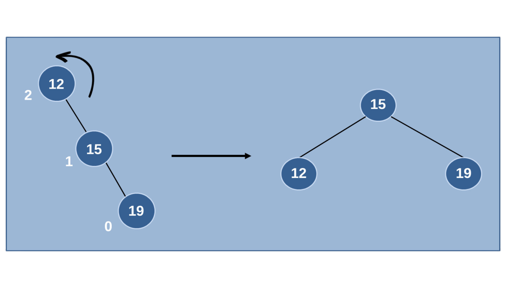

A tree is a nonlinear hierarchical data structure that consists of nodes connected by edges. Other data structures such as arrays, linked list, stack, and queue are linear data structures that store data sequentially. In order to perform any operation in a linear data structure, the time complexity increases with the increase in the data size. But, it is not acceptable in today's computational world.

- A node is an entity that contains a key or value and pointers to its child nodes.
It is the link between any two nodes.
It is the topmost node of a tree.
The height of a node is the number of edges from the node to the deepest leaf (ie. the longest path from the node to a leaf node).
The depth of a node is the number of edges from the root to the node.
The height of a Tree is the height of the root node or the depth of the deepest node.
The degree of a node is the total number of branches of that node.
A collection of disjoint trees is called a forest.
Tree traversal refers to the process of systematically visiting each node in a tree data structure. This technique is fundamental for various operations, including searching, retrieving, and modifying data within trees. Three primary tree traversal methods exist: inorder, preorder, and postorder, each with its unique order of visiting nodes.
Inorder traversal visits the nodes in a tree in a left-root-right order. This means it recursively traverses the left subtree, visits the root node, and then recursively traverses the right subtree. Inorder traversal is particularly useful for traversing binary search trees (BSTs) because it produces the elements in sorted order.
If a binary tree is traversed in-order, the output will produce sorted key values in an ascending order.
We start from A, and following in-order traversal, we move to its left subtree B.B is also traversed in-order. The process goes on until all the nodes are visited. The output of in-order traversal of this tree will be − D → B → E → A → F → C → G
Preorder traversal visits the nodes in a root-left-right order. This means it visits the root node first, then recursively traverses the left subtree, and finally recursively traverses the right subtree. Preorder traversal is often used for copying or creating a hierarchical copy of a tree.
In this traversal method, the root node is visited first, then the left subtree and finally the right subtree.
We start from A, and following pre-order traversal, we first visit A itself and then move to its left subtree B. B is also traversed pre-order. The process goes on until all the nodes are visited. The output of pre-order traversal of this tree will be − A → B → D → E → C → F → G
Postorder traversal visits the nodes in a left-right-root order. This means it recursively traverses the left subtree, then recursively traverses the right subtree, and finally visits the root node. Postorder traversal is often used for cleaning up resources associated with tree nodes, such as deleting them or releasing memory.
In this traversal method, the root node is visited last, hence the name. First we traverse the left subtree, then the right subtree and finally the root node.
We start from A, and following pre-order traversal, we first visit the left subtree B. B is also traversed post-order. The process goes on until all the nodes are visited. The output of post-order traversal of this tree will be − D → E → B → F → G → C → A
| Traversal Method | Order of Nodes Visits | Applications |
|---|---|---|
| Inorder | Left-Root-Right | Traversing BSTs in sorted order |
| Preorder | Root-Left-Right | Copying or creating hierarchical copies of trees |
| Postorder | Left-Right-Root | Cleaning up resources associated with tree nodes |
A binary tree is a fundamental and widely used data structure that represents data in a hierarchical manner. It consists of a root node, which is the starting point of the tree, and zero or two child nodes for each node. The binary tree data structure is characterized by its recursive nature, where each child node can also be a binary tree itself. This hierarchical organization allows for efficient data storage, retrieval, and manipulation.
Binary trees are used in a wide variety of applications, including:
A binary search tree (BST) is a specialized type of binary tree that maintains a specific order among its elements. Unlike a regular binary tree, where nodes can be arranged in any order, a BST ensures that the values in the left subtree of each node are less than the value of the node itself, and the values in the right subtree are greater than the value of the node itself. This property allows for efficient searching, insertion, and deletion operations.

We observe that the root node key (27) has all less-valued keys on the left subtree and the higher valued keys on the right subtree.
|
Insertion Algorithm:
|
|
Deletion Algorithm:
a. Delete the node from the tree. b. Update the parent pointer of the deleted node's sibling to point to NULL. |
|
Search Algorithm:
|
|
In-Order Traversal The inorder traversal operation in a Binary Search Tree visits all its nodes in the following order:
In-order Traversal Algorithm:
|
|
Pre-Order Traversal The preorder traversal operation in a Binary Search Tree visits all its nodes. However, the root node in it is first printed, followed by its left subtree and then its right subtree. Pre-order Traversal Algorithm:
|
|
Post-Order Traversal Like the other traversals, postorder traversal also visits all the nodes in a Binary Search Tree and displays them. However, the left subtree is printed first, followed by the right subtree and lastly, the root node. Post-order Traversal Algorithm:
|
An AVL tree, also known as an Adelson-Velsky and Landis tree, is a specialized type of binary search tree (BST) that maintains a specific order among its elements while also ensuring that the tree remains balanced. This balance ensures that the tree's height remains close to logarithmic, resulting in efficient search, insertion, and deletion operations.
|
Insertion Algorithm:
Insertion Example Let us understand the insertion operation by constructing an example AVL tree with 1 to 7 integers. Starting with the first element 1, we create a node and measure the balance, i.e., 0. Since both the binary search property and the balance factor are satisfied, we insert another element into the tree. The balance factor for the two nodes are calculated and is found to be -1 (Height of left subtree is 0 and height of the right subtree is 1). Since it does not exceed 1, we add another element to the tree. The tree is rearranged as: Similarly, the next elements are inserted and rearranged using these rotations. After rearrangement, we achieve the tree as: |
|
Deletion in the AVL Trees take place in three different scenarios:
Deletion Example Using the same tree given above, let us perform deletion in three scenarios.
Since the element 7 is a leaf, we normally remove the element without disturbing any other node in the tree However, element 6 is not a leaf node and has one child node attached to it. In this case, we replace node 6 with its child node: node 5. The balance of the tree becomes 1, and since it does not exceed 1 the tree is left as it is. If we delete element 5 further, we would have to apply the left rotations; either LL or LR since the imbalance occurs at both 1-2-4 and 3-2-4. The balance factor is disturbed after deleting the element 5, therefore we apply LL rotation (we can also apply the LR rotation here). 
Once the LL rotation is applied on path 1-2-4, the node 3 remains as it was supposed to be the right child of node 2 (which is now occupied by node 4). Hence, the node is added to the right subtree of the node 2 and as the left child of the node 4. As mentioned in scenario 3, this node has two children. Therefore, we find its inorder successor that is a leaf node (say, 3) and replace its value with the inorder successor. The balance of the tree still remains 1, therefore we leave the tree as it is without performing any rotations. |
|
Search Algorithm:
a. If the target element is equal to the value of the current node, the element has been found. Return the current node. b. If the target element is less than the value of the current node, move to the left subtree. c. If the target element is greater than the value of the current node, move to the right subtree. Search Example Input: AVL tree with values {1, 2, 3, 4, 5, 6, 7, 8, 9} Target element: 5
In this example, the search algorithm efficiently locates the target element using the ordered structure and balanced height of the AVL tree. The search path is relatively short, and the algorithm completes in logarithmic time complexity. |
|
In AVL trees, the difference between the heights of left and right subtrees, known as the Balance Factor, must be at most one. Once the difference exceeds one, the tree automatically executes the balancing algorithm until the difference becomes one again. BALANCE FACTOR = HEIGHT(LEFT SUBTREE) – HEIGHT(RIGHT SUBTREE) There are usually four cases of rotation in the balancing algorithm of AVL trees: LL, RR, LR, RL. |
|
LL Rotations LL rotation is performed when the node is inserted into the right subtree leading to an unbalanced tree. This is a single left rotation to make the tree balanced again: 
The node where the unbalance occurs becomes the left child and the newly added node becomes the right child with the middle node as the parent node. |
|
RR Rotations RR rotation is performed when the node is inserted into the left subtree leading to an unbalanced tree. This is a single right rotation to make the tree balanced again: The node where the unbalance occurs becomes the right child and the newly added node becomes the left child with the middle node as the parent node. |
|
LR Rotations LR rotation is the extended version of the previous single rotations, also called a double rotation. It is performed when a node is inserted into the right subtree of the left subtree. The LR rotation is a combination of the left rotation followed by the right rotation. There are multiple steps to be followed to carry this out.
|
|
RL Rotations RL rotation is also the extended version of the previous single rotations, hence it is called a double rotation and it is performed if a node is inserted into the left subtree of the right subtree. The RL rotation is a combination of the right rotation followed by the left rotation. There are multiple steps to be followed to carry this out.
|